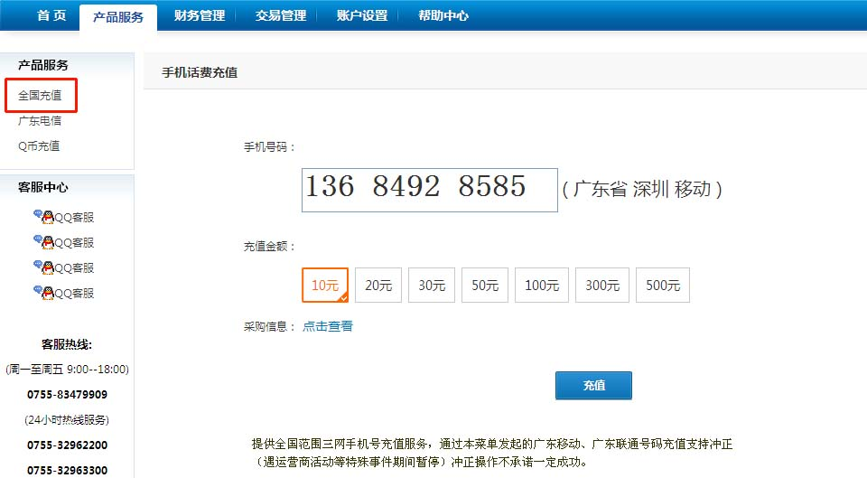

手机充值问题
1. 如何进行手机充值？
1) 在首页“产品服务”选择【全国充值】或【广东电信】菜单
2) 输入-充值手机号码，选择-充值金额，并确认号码正确无误，点击-确定充值，即可完成交易。
2. 充错号码了怎么办？
1) 在“交易管理”选择【交易冲正】
2) 在【交易冲正】中，输入需要冲正的手机号码，点击【查询】，弹出该号码所对应的充值交易，勾选【操作】并点击【冲正】；即可完成冲正。
*温馨提示：每位代理点用户每月仅能冲正10次。冲正功能仅支持：广东移动、广东联通、广东电信手机号码，广东电信冲正功能仅支持在广东电信菜单中所充值的号码，广东电信预付费号码24小时内冲正有效，后付费号码6小时申请有效，全国充值的广东电信号码不支持冲正，用户发起冲正申请，受运营商条件限制，不承诺一定成功。
3. 手机充值的佣金怎么算？
*由于各省份运营商不同，价格存在差异性，具体采购信息请点击“采购信息”进行查看。
4. 手机充值还没到账怎么办？
*如您充值的手机号码超过十五分钟未到账，请联系万汇通客服咨询与处理。